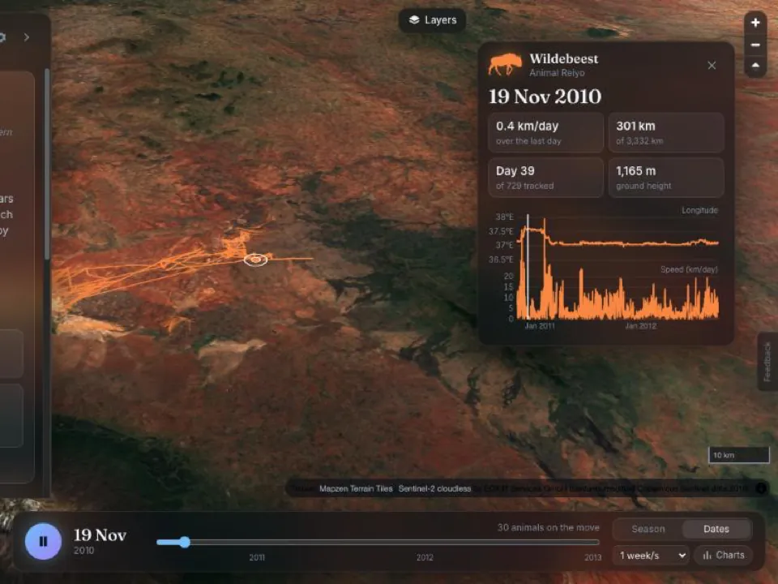
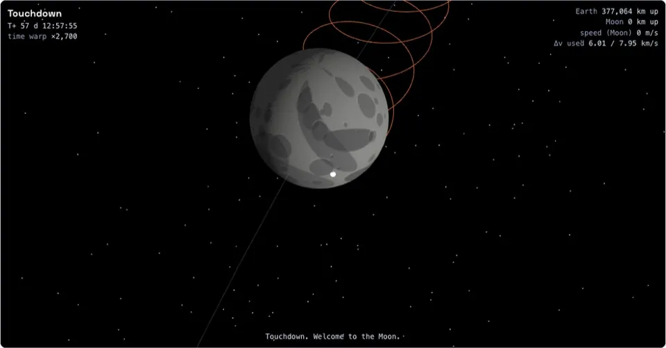
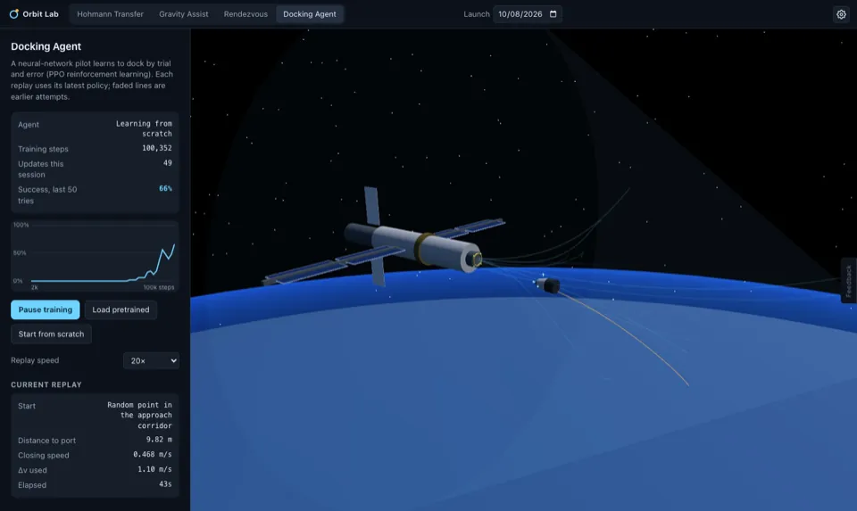
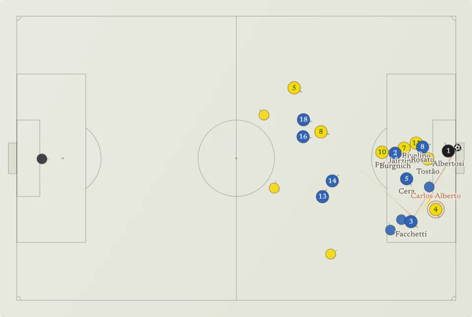
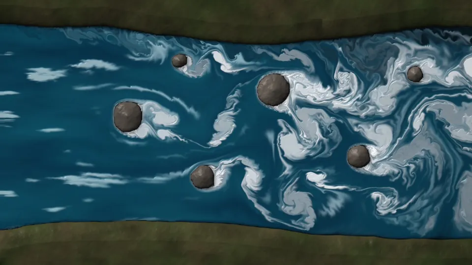
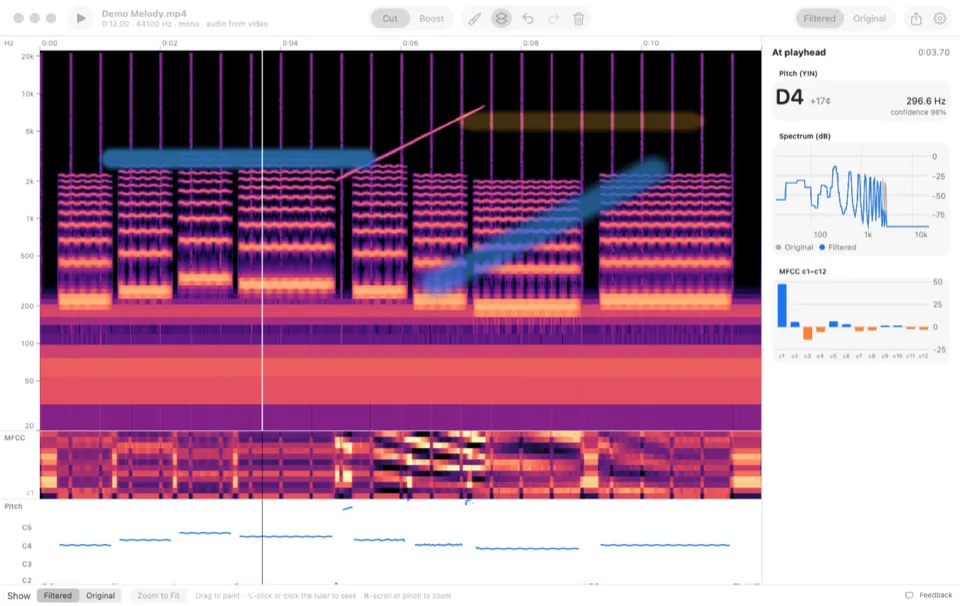
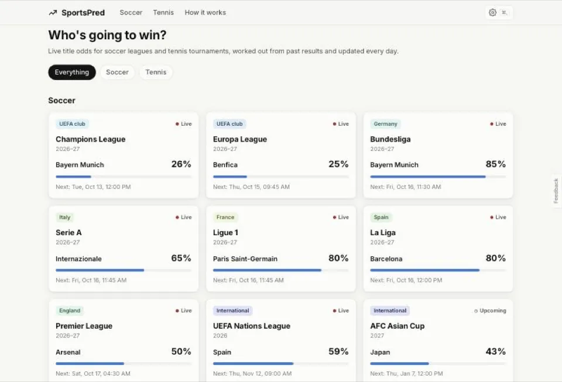

Children of Time
Adrian Tchaikovsky
It’s hard sci-fi about how a non-human intelligence evolves, and it’s pure enjoyment that still makes you think.
What I’m into right now, kept current: what I do for fun, what I’m curious about, and other things I’ve built.
Updated
Inventing places, characters and the stories that hold them together.
Side apps and games, built just because.
Writing things down, and telling the stories out loud.
Especially the ones with a strong story.
Cooking at home, and seeking out food wherever I am.
Researching the next place, and meeting the people there.
Chasing good snow.
Climbing and hiking high mountains.







Adrian Tchaikovsky
It’s hard sci-fi about how a non-human intelligence evolves, and it’s pure enjoyment that still makes you think.
Richard Hamming
This one is about choosing problems that matter and building judgment over a career. Read it first.
W. Timothy Gallwey
It’s the best book I know on performing freely instead of supervising yourself. It applies directly to dance, piano and boxing, and to chess, where you think too long over moves.
György Buzsáki
Buzsáki argues against the outside-in view of perception, and argues it well. It has real substance, not pop science.
Andy Clark
It covers prediction, action and embodiment at a level that should hold your attention.
Jimmy Soni & Rob Goodman
Shannon did serious work and played seriously too, with juggling, chess and gadgets. It’s a useful model for not separating the two.
Tim Krabbé
It’s a short novel set entirely inside one road race, and you can read it in an afternoon.
John Williams
It’s a quiet novel about a life lived on its own terms, with all the costs that brings.
Fyodor Dostoevsky, translated by Richard Pevear and Larissa Volokhonsky
It deals with free will, faith, fathers and sons. It’s long, and it’s worth it.
Andy Grove
It’s the operating manual for when you eventually run a team or a company.
A long-standing interest, from neuroimaging research at UCSF to the Sensorimotor AI journal club at Berkeley’s Redwood Center.
Agents trained in simulation that still hold up in the real world.